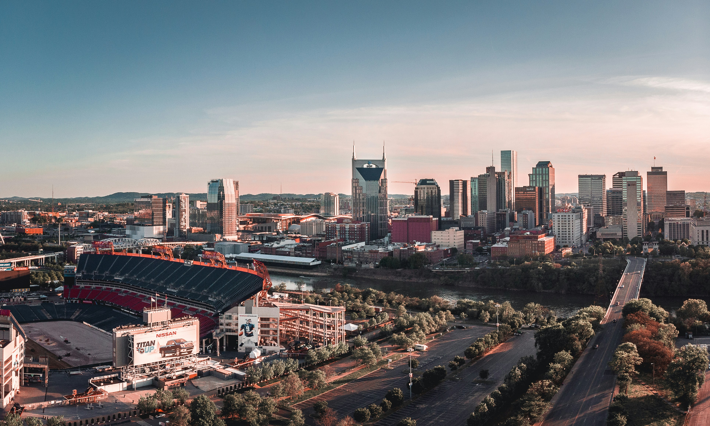

Activities

Attend shows at the Grand Ole Opry
The Grand Ole Opry is a legendary venue and the home of country music. Since 1925, it's showcased icons and newcomers in weekly concerts blending country, bluegrass, gospel, and Americana.

Visit the Country Music Hall of Fame and Museum
This downtown Nashville museum preserves the genre’s rich history with iconic exhibits, instruments, and the Hall of Fame honoring country music legends.

Explore the Cheekwood Estate & Gardens
A 55-acre estate and art museum offering year-round events like spring tulips and holiday lights, Cheekwood blends nature, history, and creativity in one stunning destination.
Check out Broadway, 12 South, and The Gulch
Bar hop on Broadway, shop in 12 South, or dine and explore trendy spots in The Gulch—each area offers something unique for every visitor.